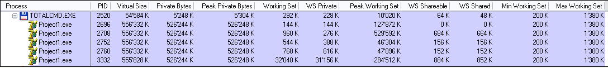
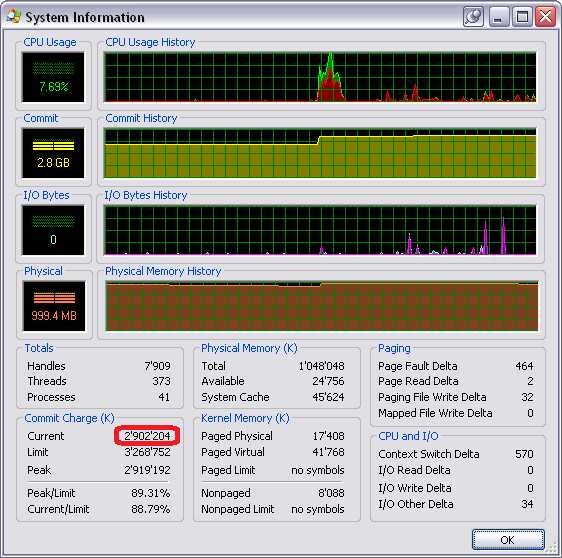

Миф №2: суммарный размер памяти для всех программ не может превышать 2 Гб
Выше мы увидели, что программа может выделить сколько угодно памяти, пока у неё есть место в виртуальном адресном пространстве. Т.е. 32-х разрядная программа может выделить 512 Мб, но не 2 Гб - потому что это размер пользовательской части адресного пространства по умолчанию. Некоторые люди считают, что все запущенные программы в системе не могут выделить более двух гигабайт памяти.
Этот миф происходит от того, что люди не понимают, что адресное пространство программы теперь своё у каждой программы (вот уже более пятнадцати лет).
Посмотрим, так ли это.
В этот раз я запустил пять копий программы-примера из предыдущего пункта и вот что получилось:

А вот и статус системы в целом:

Как видите, никаких проблем нет: все запущенные приложения в системе смогли выделить 2'902'204 Кб памяти (и да, я поднял кол-во ОЗУ до 1 Гб, чтобы система поменьше тормозила).
Что касается части два, то она выглядит так же, как ранее: нельзя выделить памяти больше, чем у вас есть оперативной памяти + файла подкачки.
Статус мифа: busted.